介绍从 iOS 9 时代开始使用的新的系统字体 San Francisco，包括 SF 字体的分支、如何使用、提供的功能等。
San Francisco Fonts
San Francisco 字体家族有两种字体二级家族，一种是 SF， 用于 iOS、macOS、tvOS，另一种是 SF Compact，专门用于 watchOS。每个字体又分两种视觉尺寸（Optical Sizes），一种是 Text，包含六种字重；另一种是 Display，包含九种字重。注：从 iOS 11 开始，苹果开始启用了 SF Pro 这个字体分支，替代了 SF。
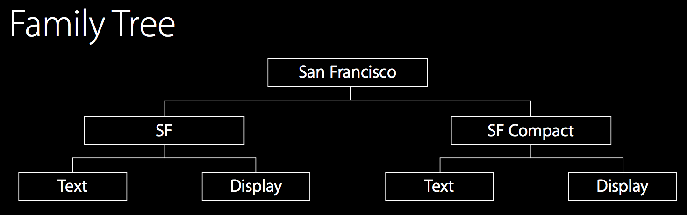
SF 与 SF Compact 的对比：SF 字体更加圆润，SF Compact 更显笔直，字母之间有更多的空间，这样在 Apple Watch 的小屏幕上，SF Compact 更加易读。
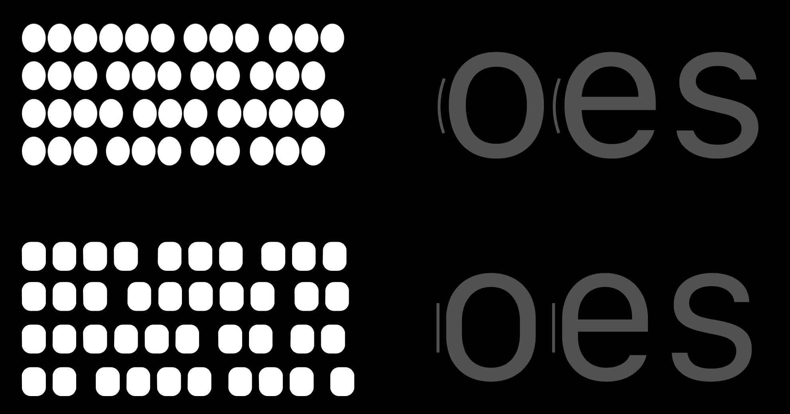
几个排版上的术语：
- baseline：基线；
- x-height：小写字母 x 的顶部，小写字母的对齐标准；
- cap height：大写字母 X 的顶部，大写字母的对齐标准；
- descender：小写字母基准线以下的对齐位置；
- ascender：小写字母基准线以上的对齐位置。

在字体比例上的几点改善：
- Cap-Height Lower Than Ascenders
- Large x-Height
- Numbers Align with Uppercase
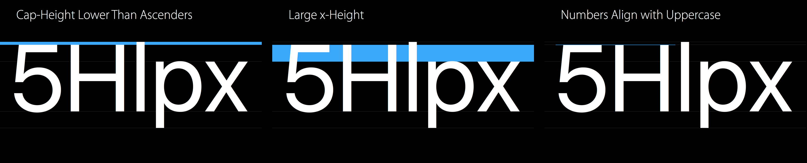
Principles
Visual perception is largely about illusion. 视觉感知总是跟错觉有关。
To make two shapes look similar, they often have to be made dissimilar. 为了让两个形状看起来相似，他们必须要被弄得不相似。
Display VS Text：Display 用于 20 磅及以上大小的文字，Text 用于 19 磅及以下大小的文字。Text 这种视觉尺寸的字间距更大（相同字号下），更易读。两种视觉尺寸在系统里自动切换，但在设计软件里要注意修改。
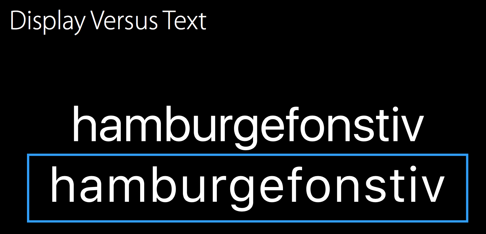
Negative Space 负空间：字母内测、字母周围的空间，Text 周围的空间几乎是 Display 的两倍。
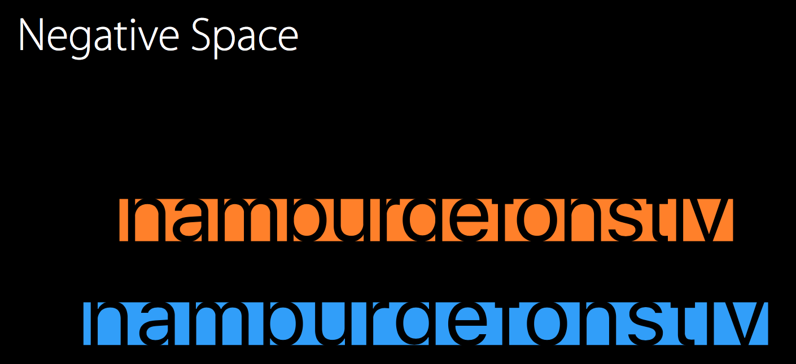
Confusable Shapes：字母间有很多相似处，在字号小时很容易混淆。Text 和 Display 就在这些地方有细微的差别。
counter：反向对称区，字母上下对称的部分
aperture：缝隙，字母的开口
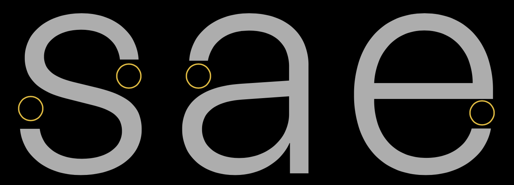
Tracking Is Size-Specific：字号越大，字间距 tracking 越小，有一个变化曲线（tracking tables）
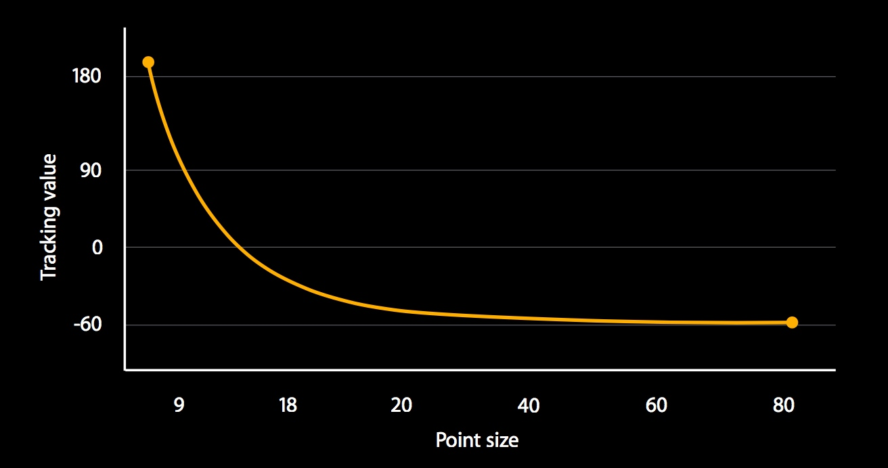
Weights 字重：Text - 6 种字重（Light、Regular、Medium、Semibold、Bold、Heavy），Display - 9 种字重（多了 Ultralight、Thin、Black），Text 的字号小，没有必要有更多字重。
在 AppKit 和 UIKit 里提供了配置字号、字重的方法，如：
UIFont.systemFontOfSize(20, weight: UIFontWeightMedium)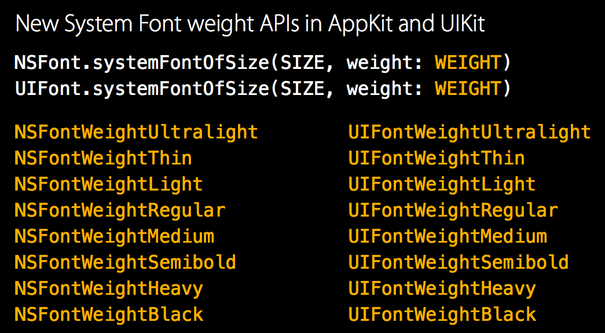
字重的作用：
Differentiation and hierarchy 区分和层级

Similitude 相似：更大的尺寸，更小的自重；更小的尺寸，更大的自重
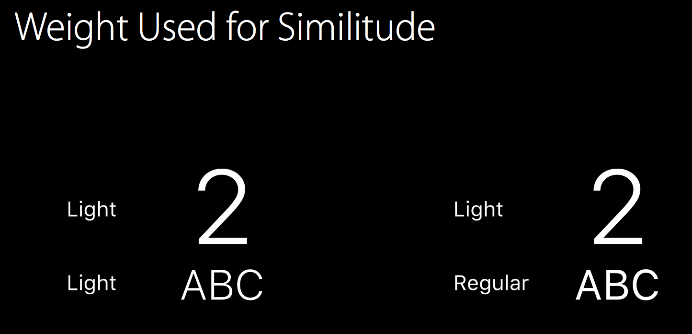
Voice 氛围：字重的巧妙利用，可以营造完全不同的氛围。
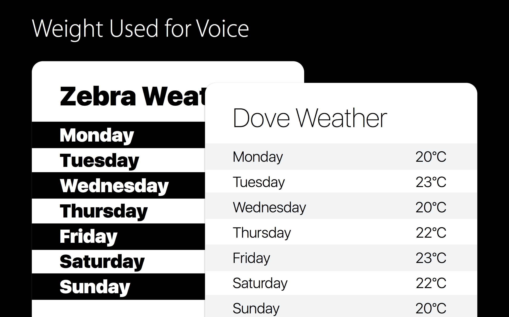
怎样使用字重：
- 首先保证要清楚；
- 建立连续、清晰的层级关系；
- 在 iOS 中可以使用 Text Style APIs，适配动态类型
- 注意在 iOS 和 watchOS 中的「设置」→「通用」→「辅助功能」里提供了「粗体文本」的开关选项；
- 如果使用过粗的字重可能就会到达极限；
- 如果使用过细的字重，对于某些用户来说，可读性大大下降。
- 首先保证要清楚；
Typographic Features
- Features are behaviors embedded inside a font.
开启这些 Feature：Xcode 中的 Typography Panel。
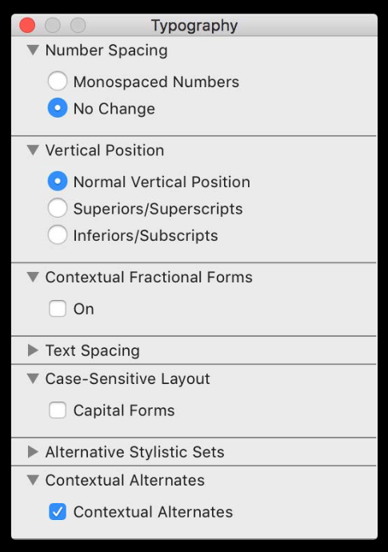
Fractions 分数：自动转换（2/9这种输入自动转换)
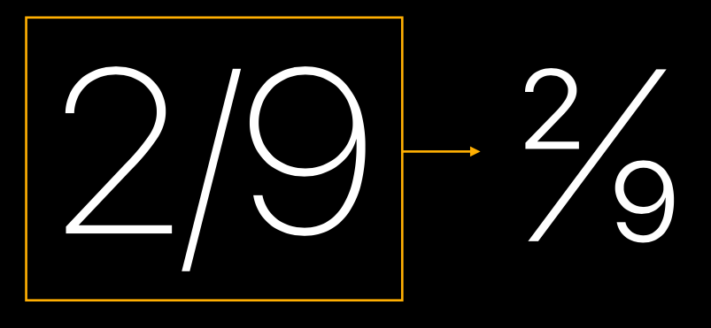
在代码中启用这个功能的方法示例如下：
``` let pointSize : CGFloat = 60.0 let systemFontDesc = UIFont.systemFontOfSize(pointSize, weight: UIFontWeightLight).fontDescriptor() let fractionFontDesc = systemFontDesc.fontDescriptorByAddingAttributes( [ UIFontDescriptorFeatureSettingsAttribute: [ [ UIFontFeatureTypeIdentifierKey: kFractionsType, UIFontFeatureSelectorIdentifierKey: kDiagonalFractionsSelector, ], ] ] ) label.font = UIFont(descriptor: fractionFontDesc, size:pointSize) ```Superiors / Superscripts 上标、Inferiors / Subscripts 下标
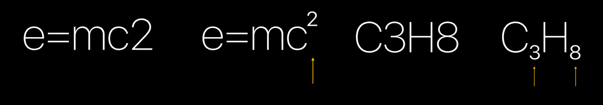
Uppercase Forms 大写形式 （A+3中的加号）
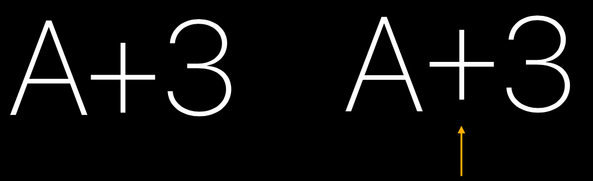
Vertically Centered Colon：时间中的冒号，默认开启，上下居中显示
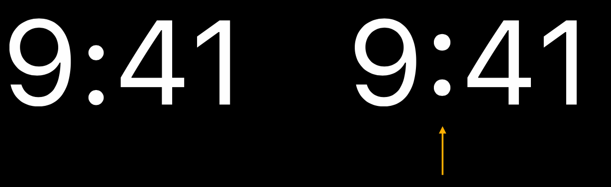
Alternate Six and Nine：数字 6 和 9 在字号较小、和数字 8 混排时会容易看不清，所以有另一种字形可供使用，例如在 Apple Watch 上的小表盘里、Apple Watch 背面的序列号上。
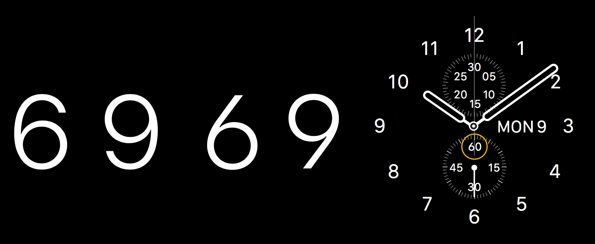
Features 和 Optical Sizes 的结合：例如在 Display 尺寸下，分数中的数字 6 可以使用默认样式，而在 Text 尺寸下，分数中的数字 6 应该使用变形的样式。
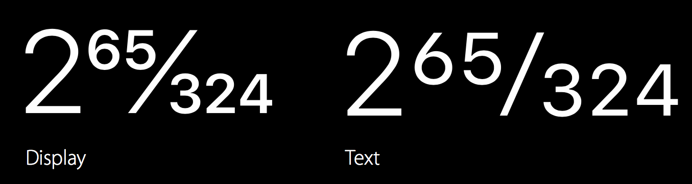
proportional numbers（按比例排布的数字，自然宽度，默认），可用于固定显示的数字、monospaced numbers（等宽的数字，可选），可用于动态显示的数字（如跳动的时间、变化的速度）以及为保证对齐的列表样式和多行样式，iOS 9.0 and OS X 10.11 开始默认为 proportional numbers。
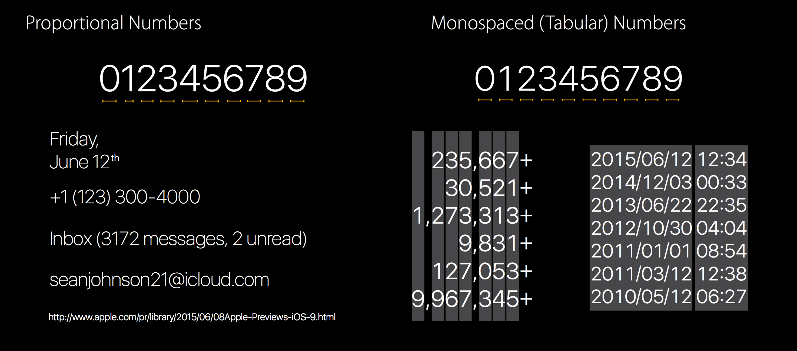
Font API Pitfalls
由于涉及到具体的开发细节，在此只列出 Keynote 里提到的几点，暂不展开：
- Don’t Access Fonts with Private Names；
- Don’t Reference Font File Names；
- Don’t Access System Font by Name；
- Do Reuse Font Descriptors；
- Don’t Draw System Font at a Different-Than-Nominal Point Size。
Session 链接：Introducing the New System Fonts - WWDC 2015 - Videos - Apple Developer
相关文章
📱💻⌚️📺
如果你觉得这篇文章对你有所帮助，欢迎请我喝杯咖啡，感谢你的支持😁